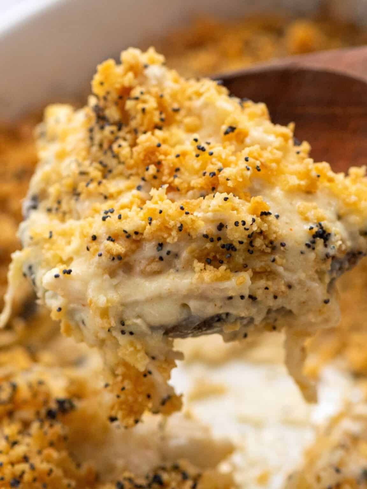

Poppy Seed Chicken

Delicous poppy seed chicken!
A classic homestyle casserole. Easy to make and enjoyed by all!
- 5 cups of chicken breast
- 1 cup sour cream
- 21.25 ounces condensed cream of chicken soup
- 2 cups crushed crackers
- 1/2 cup melted butter
- 1 tablespoon poppy seeds
Steps
- Preheat oven to 350 degrees F (177 C).
- Place shredded chicken in 9x13 casserole dish.
- Stir together the condensed soup and sour cream. Pour over the chicken.
- In a separate bowl, stir together crushed crackers and melted butter. Sprinkle over chicken and sauce. Add poppy seeds on top.
- Bake for 20-30 minutes. Or until top is browned and sauce is bubbly.